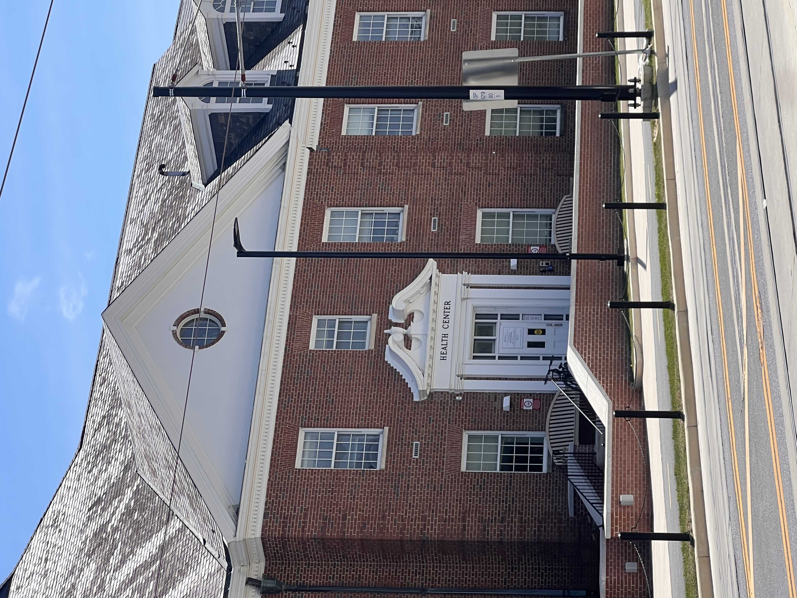
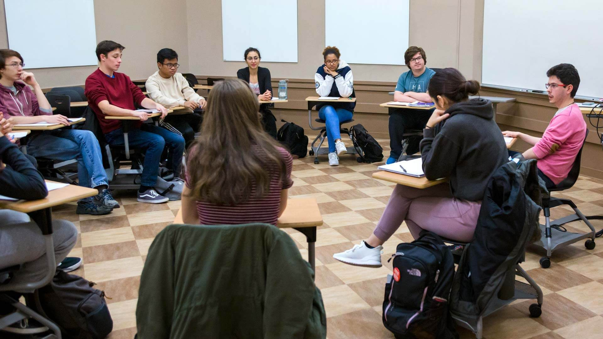

While attendance is not required in every class at the University of Maryland, many students say individual class policies make them feel obligated to attend class while sick to avoid bad grades.
The university allows professors to set their own attendance rules, creating confusing expectations for students, they say. Some professors do not track attendance, while others incorporate it into the grading system or only allow one self-excused absence. In some classes, students must provide a doctor’s note to receive an excused absence.
“I would rather go to a class that requires attendance with a cold than try to get a doctor’s note for a sickness that isn’t that serious,” said junior Andrew Parr.
Students said that it can be difficult to get a doctor’s note, especially for minor illnesses, leading students to attend class sick. University Health Center appointments can be difficult to schedule because of a lack of availability, and off-caxmpus urgent care can require insurance or out-of-pocket payments, which many students try to avoid.

Photo by Emma Levine
Some professors have more flexible approaches, allowing one or two self-excused absences per semester without a doctor’s note. Students say having a self-excused absence policy reduces their worries and allows them to manage minor illnesses or mental health days without worrying about consequences.
However, because this is not the policy across the university, students often encounter conflicting expectations. A student may be allowed to miss one class without consequence in one course but receive point deductions for attendance in another.
“It’s stressful because every syllabus is different,” said sophomore Jack Zwirn, “You have to plan around the strictest class, not what’s best for you.”
Some professors may follow the university's attendance policy rather than create their own.
The policy states that: “An excused absence is an absence for which the student has the right to receive --and the instructor has the responsibility to provide-- academic accommodation.” This means the professor must be reasonable when it comes to making up the work missed.
Some students may miss class prior to getting a doctor’s note, but will let the professor know in advance.
“If I can't get an appointment with the health center in time for class, I’ll usually email my professor that I can’t make it. Once I get the appointment and am able to be excused from class, I send the letter to my professor,” said sophomore Madeleine Burke.

Photo courtesy of Maryland Today
Still, students say that the university’s policies are not empathetic to issues that may come up in student life, like illness, mental health challenges, jobs and extracurricular activities. Burnout happens more often when students feel they cannot take time off without academic consequences, even just missing one day of class.
The university does not mandate a single attendance policy, leaving decisions to departments and individual instructors. In the university’s policy page, there is an option for students to write a self-signed note for a medical excuse.
Some students wish there were broader guidelines that would allow more than just one self-excused absence across courses or allow students to write a sick note for themselves rather than relying on doctors’ notes. Others believe there should be other options for making up missed work or more flexibility depending on the student’s circumstances.
In a survey, 41 students responded to the following question: “If you are sick, how often do you skip class if you don't have a doctor's note?”
20 students said “sometimes,” 12 students said “always,” and 9 students said never. This data showed that for most students, it may depend on the class or how sick they really are. Additionally, if the class is a general education class or a class required for their major makes some difference.
For now, students continue to balance their health against the risk of falling behind. “You want to put yourself first,” said sophomore Emma Tropiano, “But you also don’t want your grade to suffer.”
As the debate continues, the question remains unresolved: how to maintain academic rigor while ensuring students are not penalized for prioritizing their health.